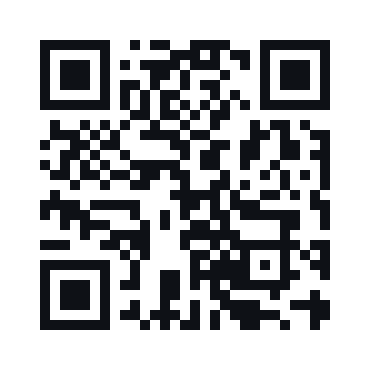
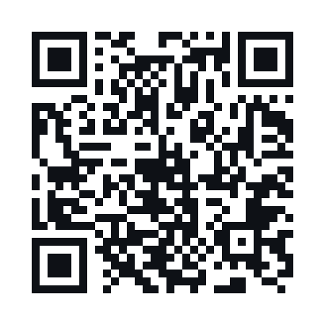
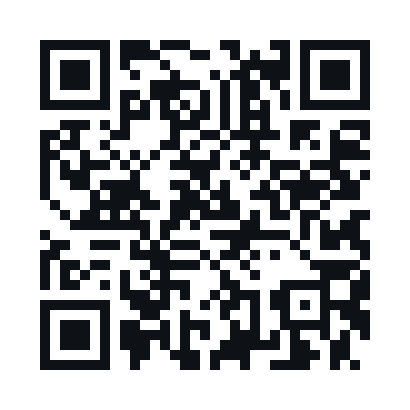
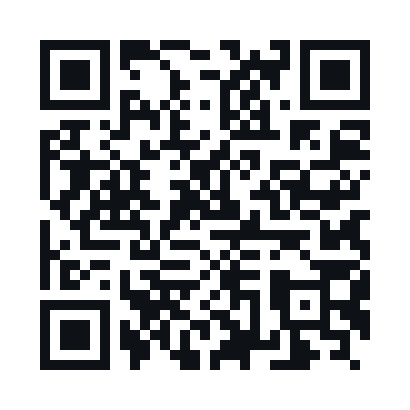

QR del material POP
Cada pieza lleva su propio QR para saber de dónde llegan las inscripciones (columna origen). Todos apuntan a la landing pública de sintonia.my, nunca al formulario. Antes de aprobar un tiraje, escanea la prueba impresa con un iPhone y un Android. Se regeneran con python3 tools/qr-pop.py.

https://sintonia.my/?o=qr-totemMínimo impreso: 15 × 15 cm · versión 3, corrección Q

https://sintonia.my/?o=qr-volanteMínimo impreso: 4 × 4 cm · versión 4, corrección Q

https://sintonia.my/?o=qr-tarjetaMínimo impreso: 2,5 × 2,5 cm · versión 4, corrección Q

https://sintonia.my/?o=qr-stickerMínimo impreso: 2,5 × 2,5 cm · versión 4, corrección Q